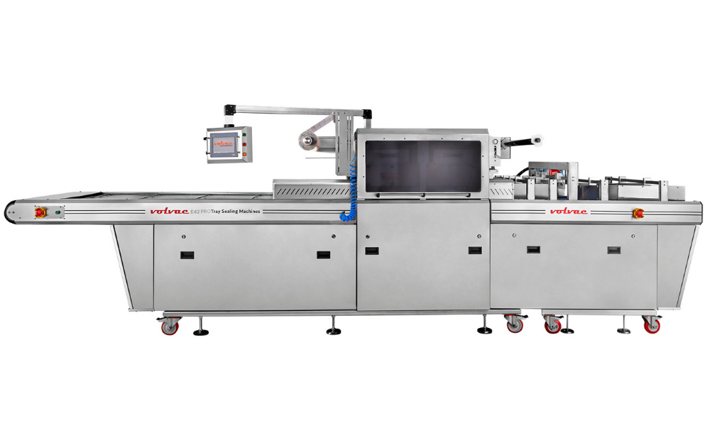
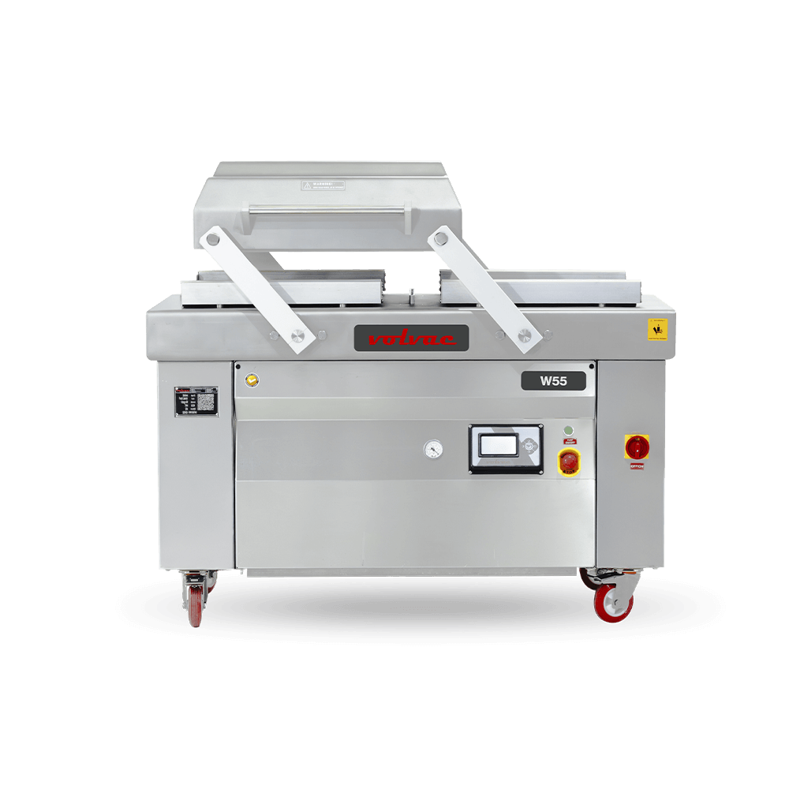
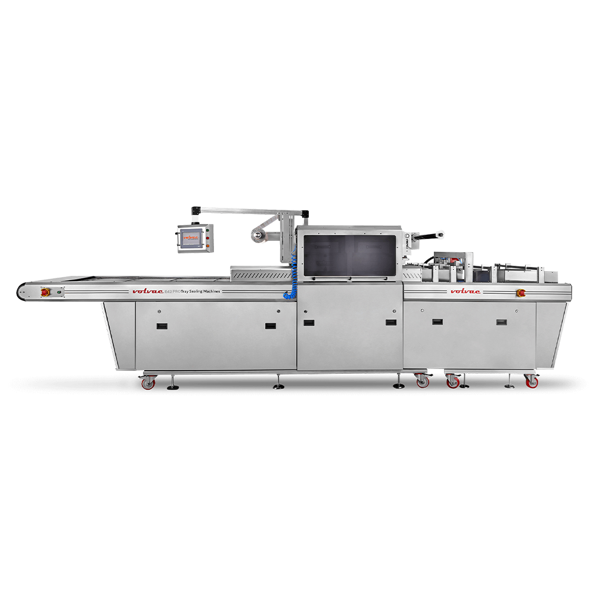
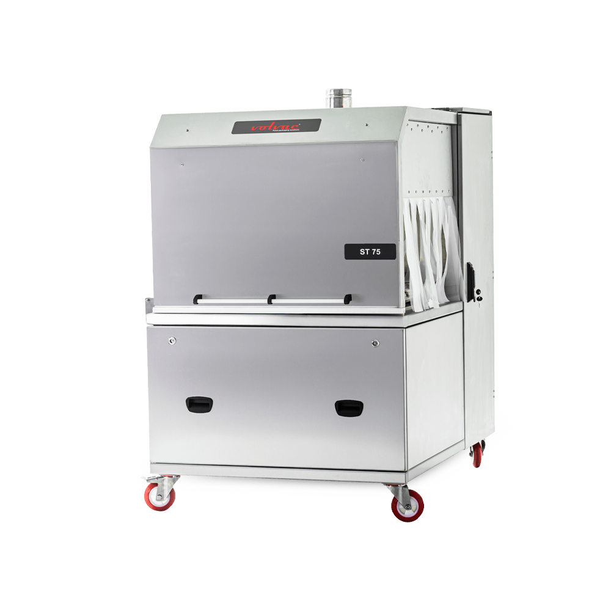
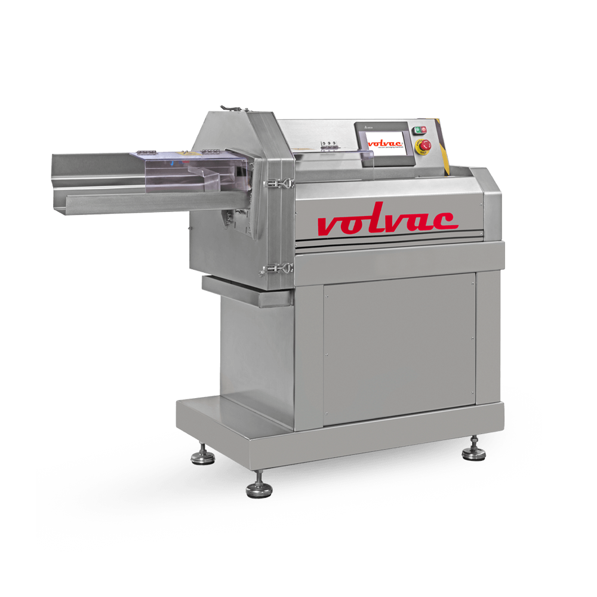
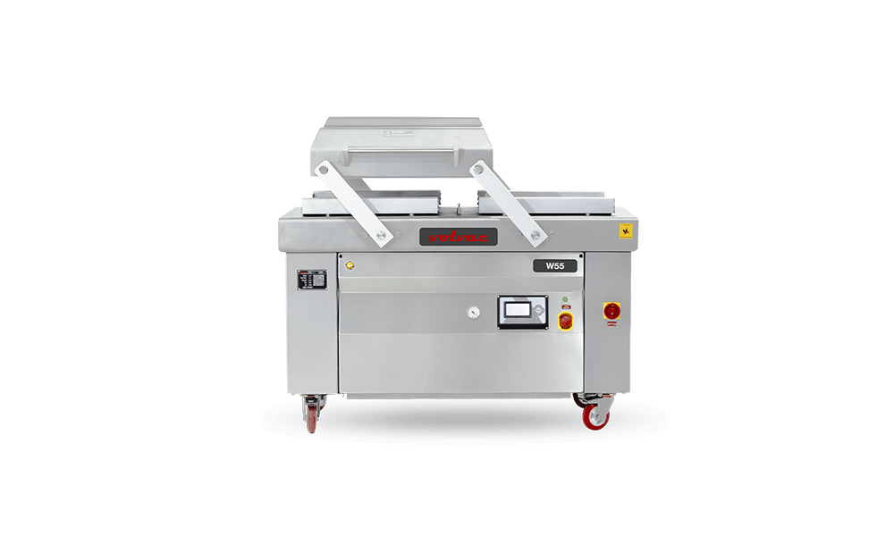
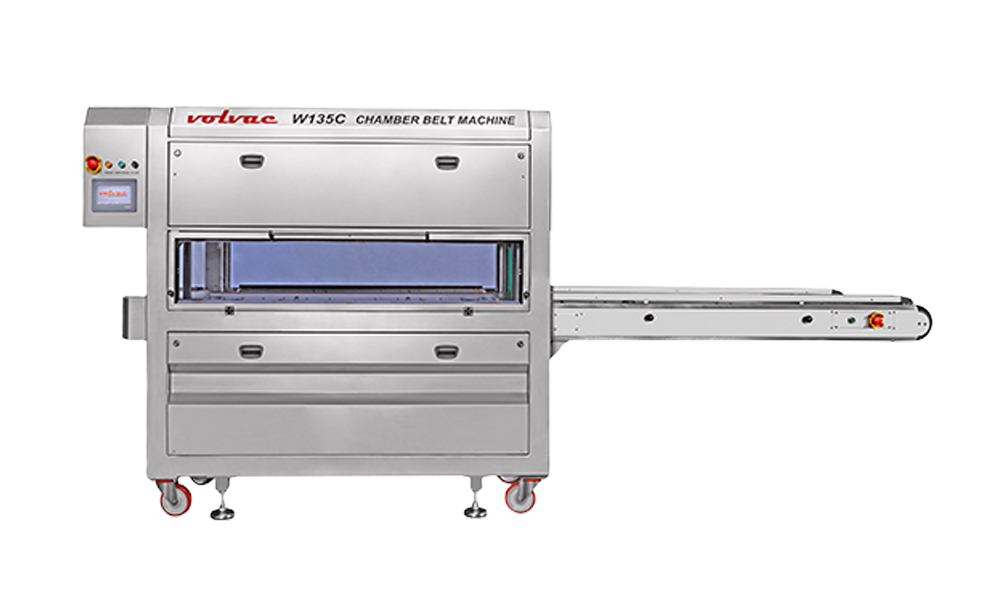
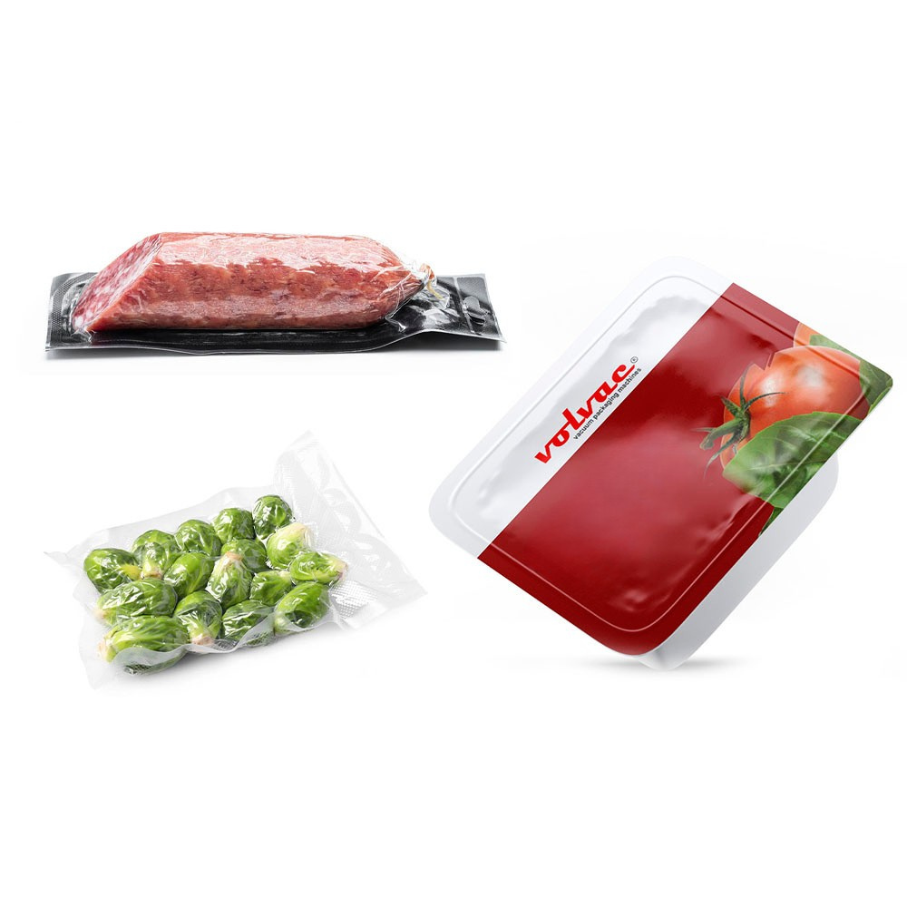
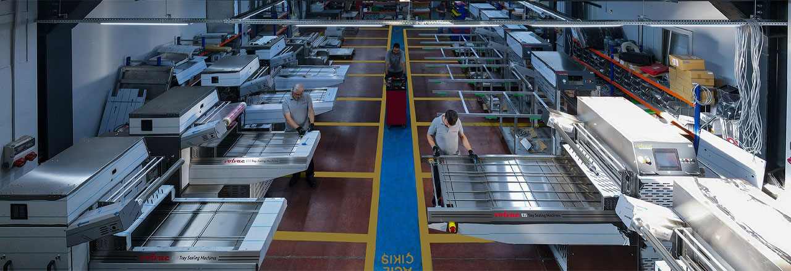

Fully automatic tray sealing
E 42 PRO
Ideal for high-volume production, and an excellent solution for large products thanks to its spacious dimensions.
Volvac builds vacuum packaging and tray sealing machines in Istanbul, and ships them to food producers in over 42 countries.
A 3D model of a chamber vacuum machine. Drag the plate to turn it, or press the red button on the machine. Readings are illustrative.

From a manual sealer on the bench to an inline machine in the line. Manual, drawer, semi automatic, full automatic, inline and rotary models, and skin pack on the E series.
Illustrative 3D model and readings.

After the vacuum, the finish. The pack is dipped or passed through the tunnel so the film shrinks tight around the product, then dried.
Illustrative 3D model and readings.

Sliced first, then packed. The S 20 feeds, slices and lays the product out ready for the tray or the bag.
Illustrative 3D model and readings.

Two choices narrow the whole range to the models that fit. Pick a model to start a quote.

Fully automatic tray sealing
Ideal for high-volume production, and an excellent solution for large products thanks to its spacious dimensions.

Double chamber vacuum packaging
Four sealing jaws of 55 cm each, so two vacuum bags can be placed at the same time. With 24 memory options, each process is defined once and reused.

Conveyor vacuum machine
An ideal model for daily vacuuming operations, practical to use and ready for every packaging job.
The right way to package your products is about both preserving freshness and presenting them well. Start from the food.


With 18 years of experience in packaging and food machinery, Volvac manufactures in its own factory and exports to over 42 countries.
Every machine is built with CNC technology under a zero-error principle, tested for CE and other international standards before sale, and designed for easy maintenance. After-sales support runs from installation to technical assistance.
"When we started as Volvac, our goal was to make the machines we produce in Turkey a symbol of trust and quality worldwide. Behind every machine we produce, there is meticulous R&D work and a zero-defect target."
Our engineers will suggest the machine that suits it.
Monday to Friday, 07:30 to 17:30
Hannover, Germany. Minsk region, Belarus. Giza, Egypt.